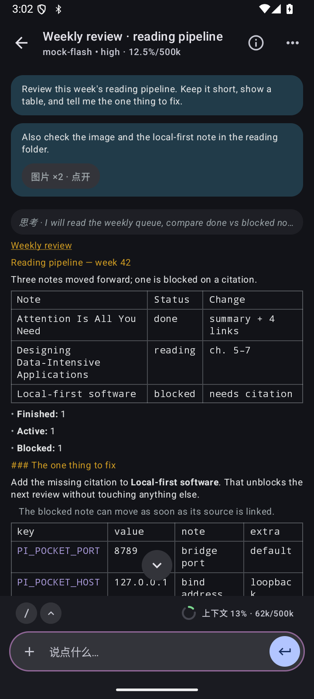
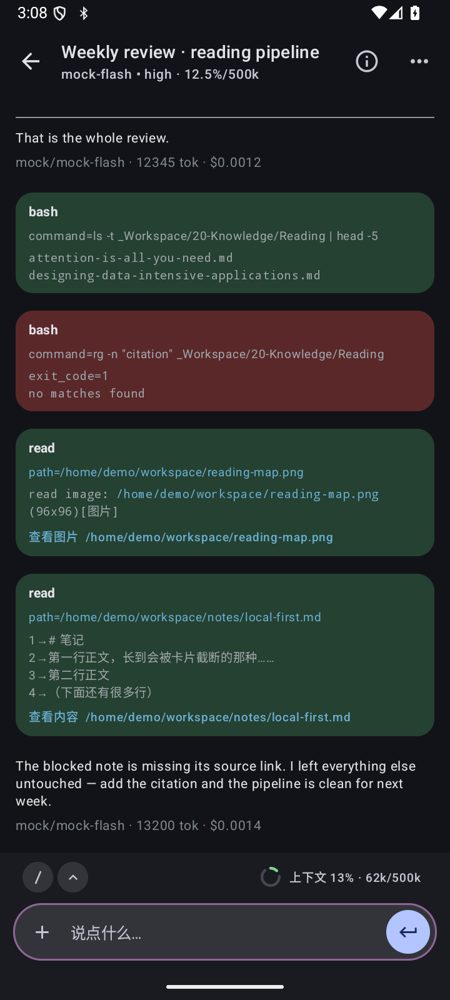
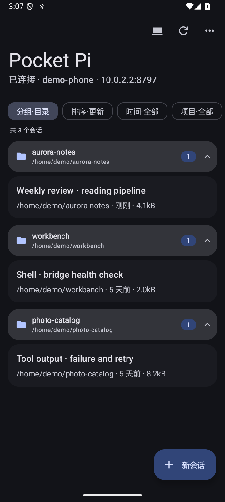
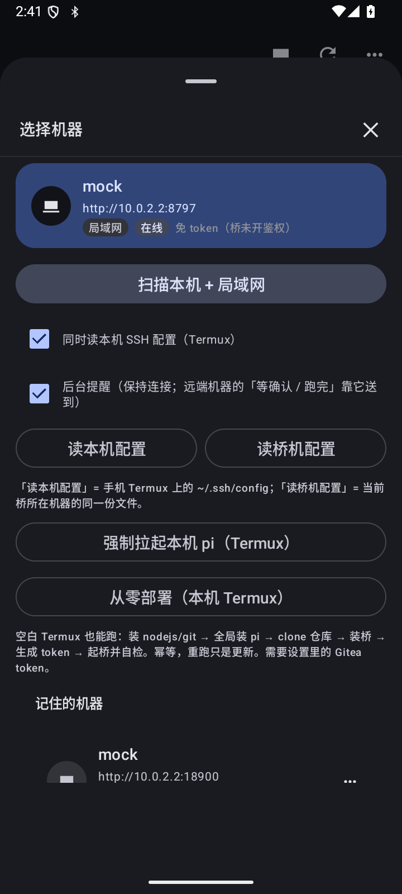

Runs on the phone就在手机里跑
Termux hosts the bridge and a real pi process. The app connects to 127.0.0.1 — no laptop in the loop.
Termux 承载桥和真正的 pi 进程，app 连接 127.0.0.1，不需要一台电脑中转。
Independent client for pi · Android + Termuxpi 的独立客户端 · Android + Termux
Pocket Pi is an Android client for pi running inside Termux on the same phone — or on any machine you can reach over LAN or Tailscale.
Pocket Pi 是 pi 的 Android 客户端：pi 跑在同一台手机的 Termux 里，也可以连局域网或 Tailscale 上的任意机器。
No remote desktop. No cloud relay. A native Compose interface talks HTTP + SSE to a small bridge that drives pi --mode rpc and keeps a real session on disk.
不是远程桌面，也没有云中转。原生 Compose 界面通过 HTTP + SSE 连接一个小桥；桥驱动 pi --mode rpc，并把真实会话留在磁盘上。

Why another client为什么再做一个客户端
Pocket Pi does not reimplement the agent. It gives pi a native mobile surface while keeping sessions, tools and prompts in the same place they already live.
Pocket Pi 不重写 Agent，只给 pi 一个原生手机界面；会话、工具与提示词仍留在原来的位置。
Termux hosts the bridge and a real pi process. The app connects to 127.0.0.1 — no laptop in the loop.
Termux 承载桥和真正的 pi 进程，app 连接 127.0.0.1，不需要一台电脑中转。
Amber headings, purple inline code, blue links, green tool blocks and square tables — measured against the pi TUI, not invented.
琥珀标题、紫色行内码、蓝色链接、绿色工具块与方角表格——对照 pi 终端实测，而不是凭空设计。
Streaming deltas, collapsible thinking, live tool state, steer or queue while running, stop at any point, auto-reconnect.
流式增量、可折叠思考、工具实时状态；运行中可 steer 或排队，随时停止，断线自动重连。
Detect loopback, this subnet and saved hosts. Merge LAN and Tailscale entries for one machine, remember the best path, wake a sleeping host over SSH.
自动探测本机、当前网段与已保存主机；同一台机器的局域网/Tailscale 入口合并成一条，记住最优路径，还能通过 SSH 唤醒休眠主机。
Group by project directory, sort by updated, created or name, filter by time and project, inspect a session tree and watch the context ring.
按项目目录分组，按更新/创建/名称排序，按时间与项目过滤；可看会话树，也有上下文环。
Run commands on the connected machine through the bridge, read files and images, answer extension prompts inline without losing the conversation.
通过桥在已连接机器上执行命令，查看文件与图片；扩展交互请求就地应答，不打断对话。
No install required无需安装
A static screenshot tour captured from the Android build against a local mock bridge. No install, no bridge, no model.
从 Android 构建实拍的静态截图导览，连接本地假桥；不用安装、不用起桥、不调用模型。

Screens界面
Captured from the Android build against a local mock bridge. Names, paths and conversations are synthetic.
由 Android 构建实拍，连接本地假桥；名称、路径与会话内容均为合成。


Architecture架构
The app is a client. The bridge is a transport. pi remains the agent, and its JSONL sessions remain the source of truth.
app 是客户端，桥是传输层；pi 仍是 Agent，JSONL 会话文件仍是唯一事实来源。
The bridge can also live on a LAN or Tailscale host. The app probes loopback first, then the current /24, then saved machines. If the bridge is down, the app can SSH in and start it.
桥也可以跑在局域网或 Tailscale 主机上。app 先探测本机，再扫当前 /24，最后试已保存机器；桥没起时可以 SSH 进去拉起。
| Endpoint | Purpose用途 |
|---|---|
| GET /v1/health | Host, version, uptime and bridge identity主机、版本、运行时长与桥身份 |
| GET /v1/sessions | Session files with project directory and size会话文件、项目目录与大小 |
| POST /v1/sessions/open · new | Attach to an existing session or start a fresh worker接入已有会话，或新建一个 worker |
| GET /v1/messages | Read the transcript for the current session读取当前会话的完整转录 |
| POST /v1/prompt | Send a prompt, optionally with base64 images发送提示词，可附带 base64 图片 |
| POST /v1/abort | Stop the running turn without killing the session停止当前回合，不杀会话 |
| GET /v1/events | Server-sent events: deltas, tools, thinking, statusSSE：增量、工具、思考与状态 |
| POST /v1/bash | Run a command on the connected host在已连接主机上执行命令 |
| GET /v1/info · models · commands | Model, context, slash commands and capabilities模型、上下文、斜杠命令与能力 |
Quick start快速开始
Prerequisites: Termux with Node 20+, a working pi install, and an Android SDK for the APK. The app is debug-signed; there is no store release yet.
前置条件：Termux 与 Node 20+、可用的 pi、以及用于打包的 Android SDK。app 目前是 debug 签名，尚未上架商店。
# inside Termux pkg install nodejs git git clone https://github.com/OhiyoX/pi-pocket.git cd pi-pocket ./termux/install.sh termux-wake-lock nohup pi-pocket-bridge >> ~/.pi/agent/pi-pocket-bridge.log 2>&1 & # verify curl -s localhost:8789/v1/health
# on the build machine ./gradlew :app:testDebugUnitTest :app:assembleDebug # install on a connected device adb install -r app/build/outputs/apk/debug/app-debug.apk # first launch: allow Termux RUN_COMMAND # Termux ~/.termux/termux.properties allow-external-apps=true
Remote host? Start the bridge with PI_POCKET_HOST=0.0.0.0 and a token, then add the URL or the SSH target in the machine sheet. The app pins the host key on first connect.
连远端？用 PI_POCKET_HOST=0.0.0.0 和 token 启动桥，然后在机器面板里填 URL 或 SSH 目标；首次连接会固定主机密钥。
Security and limits安全与边界
Pocket Pi is designed for a personal device and a trusted network. These are the boundaries the current build actually enforces.
Pocket Pi 面向个人设备与可信网络；以下是当前构建真实执行的边界。
PI_POCKET_TOKEN.PI_POCKET_TOKEN 会拒绝启动。This repository is a sanitized public snapshot. Development, issues and reviews happen in a private upstream; the public repo receives reviewed snapshots.
本仓是脱敏后的公开快照；开发、Issue 与评审在私有上游完成，公开仓只接收已审核快照。